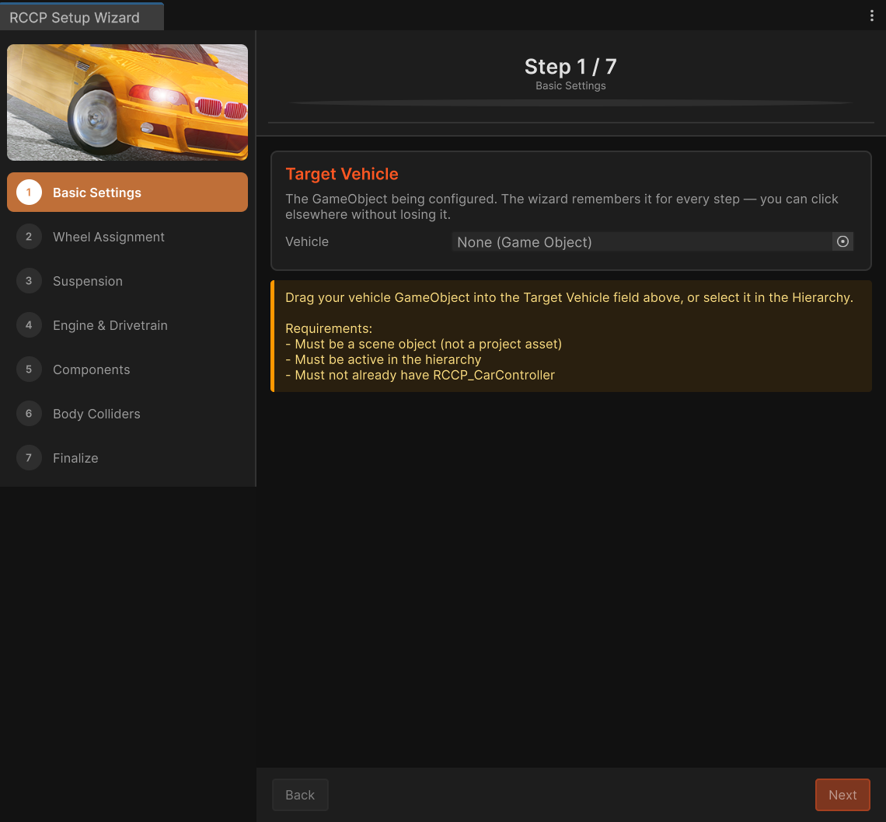
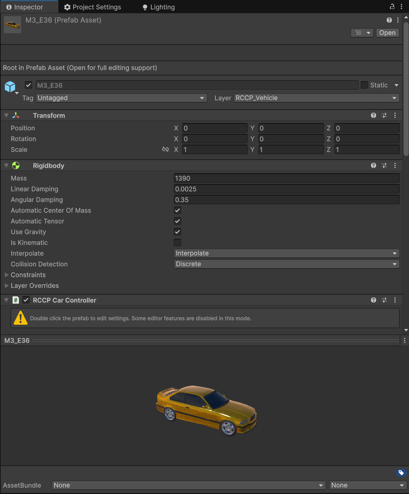

Vehicle Setup
Table of Contents
- Vehicle Setup
- Overview
- Opening the Setup Wizard
- Preparing Your 3D Model
- Model Requirements
- Quick Checklist
- Setup Wizard Walkthrough
- Step 1: Basic Settings
- Step 2: Wheel Assignment
- Step 3: Suspension Settings
- Step 4: Engine and Drivetrain
- Step 5: Addon Components
- Step 6: Body Colliders
- Step 7: Finalize
- Manual Vehicle Setup (Without Wizard)
- Step-by-Step Manual Setup
- Configuring Axles
- Key Axle Settings
- Typical Axle Configurations
- Drive Types Explained
- FWD (Front Wheel Drive)
- RWD (Rear Wheel Drive)
- AWD (All Wheel Drive)
- Common Setup Issues
- Vehicle flips or bounces on start
- Wheels spinning in the wrong direction
- Vehicle slides sideways
- Vehicle is too slow
- No engine sound
- Vehicle falls through the ground
- Meshes not readable warning
- Vehicle already has RCCP_CarController
- Next Steps
This guide walks you through setting up a vehicle with Realistic Car Controller Pro (RCCP). Whether you prefer a guided wizard or hands-on manual setup, this page covers both approaches in detail.
Overview
There are two ways to set up a vehicle in RCCP:
- Setup Wizard (recommended for beginners) -- A 7-step editor window that walks you through every decision, from wheel assignment to engine tuning. This is the fastest way to get a drivable vehicle.
- Manual setup -- Add individual RCCP components yourself for full control over every detail. Better suited for experienced users or unusual vehicle configurations.
Opening the Setup Wizard
You can open the wizard from two menu paths:
- Tools > BoneCracker Games > Realistic Car Controller Pro > Vehicle Setup > Setup Wizard
- GameObject > BoneCracker Games > Realistic Car Controller Pro > Vehicle Setup > Setup Wizard
The wizard window appears with a progress bar at the top and Back/Next buttons at the bottom. You can move freely between steps before clicking Finish.

Preparing Your 3D Model
Before running the wizard (or setting up manually), your vehicle model needs to meet a few requirements. Getting these right saves a lot of troubleshooting later.
Model Requirements
| Requirement | Why It Matters |
|---|---|
| Wheel meshes must be separate GameObjects | RCCP needs to spin, steer, and suspend each wheel independently. Wheels baked into the body mesh cannot move. |
Each wheel should be its own child object (e.g., Wheel_FL, Wheel_FR, Wheel_RL, Wheel_RR) | The wizard and auto-detection rely on finding individual wheel objects in the hierarchy. |
| The vehicle model should face forward along the Z axis | Unity's forward direction is +Z. If your model faces a different direction, the vehicle will drive sideways. |
| Scale should be realistic (a typical car is roughly 4-5 meters long in Unity units) | Physics behaves unpredictably with very small or very large objects. One Unity unit equals one meter. |
| The pivot point of each wheel should be at the center of the wheel | WheelColliders are placed at the wheel pivot. If the pivot is offset, the wheel will appear to float or sink. |
| The body mesh should not include wheel geometry | If wheels are part of the body, you will see duplicate wheels (the body's static wheels plus RCCP's moving wheels). |
Quick Checklist
- Open your model in the Hierarchy and confirm each wheel is a separate child object
- Check that the model faces +Z in the Scene view (the blue arrow)
- Verify the scale: select the root object and look at the Transform -- the model should be around 4m long
- If your model is a prefab, the wizard can unpack it for you during setup
Setup Wizard Walkthrough
The wizard has 7 steps (labeled Step 1 through Step 7 in the window). Each step focuses on one aspect of the vehicle.
Step 1: Basic Settings
This is where you select your vehicle and set its core properties.
What to do:
- Select your vehicle GameObject in the Hierarchy panel (click on it)
- Open the Setup Wizard -- it automatically detects your selection
- The wizard cleans up the name (removes common suffixes like "(Prototype)" or "by Author")
- Set the following fields:
| Field | Default | Description |
|---|---|---|
| Vehicle Name | Auto-detected from GameObject name | The display name for your vehicle. Also becomes the GameObject name after setup. |
| Mass (kg) | 1350 | The total weight of the vehicle. This affects acceleration, braking distance, and suspension behavior. |
| Handling Type | Balanced | Controls how assist systems (steering helper, traction helper, angular drag) are configured. |
Handling Type presets explained:
| Preset | Steer Helper | Traction Helper | Angular Drag | Best For |
|---|---|---|---|---|
| Balanced | 0.1 | 0.125 | 0.15 | Good all-around default |
| Stable | 0.2 | 0.3 | 0.3 | Casual or mobile players who want easier control |
| Realistic | 0.025 | 0.05 | 0.075 | Simulation players who want minimal assists |
Typical mass values by vehicle type:
| Vehicle Type | Mass Range (kg) |
|---|---|
| Small car / hatchback | 1000 - 1200 |
| Sedan | 1300 - 1500 |
| SUV / crossover | 1800 - 2200 |
| Truck / heavy vehicle | 3000+ |
Model Preparation options: If the wizard detects that your model is a prefab, has existing Rigidbodies, or has existing WheelColliders, it shows additional toggles:
- Unpack prefab (recommended) -- Unpacks the prefab instance so you can freely edit children
- Remove existing Rigidbodies (recommended) -- Removes any Rigidbodies already on the model that would conflict with RCCP's Rigidbody
- Remove existing WheelColliders (recommended) -- Removes any WheelColliders already present that would conflict with RCCP's wheel system
- Fix pivot position -- Centers the vehicle origin based on the model's render bounds. Enable this if your model's pivot is not at the bottom center.
Scene readiness: The wizard also checks if your scene has an RCCP Camera and a ground collider. If either is missing, you will see a warning with instructions on how to add them.
Step 2: Wheel Assignment
This step identifies which child objects are your vehicle's wheels and assigns them to front and rear axles.
Auto-detection: When you enter this step, the wizard automatically runs wheel detection. It analyzes the model hierarchy looking for objects with names like "wheel", "tire", "rim", or position patterns like "FL", "FR", "RL", "RR". Detected wheels are highlighted in the Scene view:
- Green circles with labels (FL, FR, RL, RR) = assigned wheels
- Yellow circles with "?" = detected candidates that were not assigned
What to do:
- Check if auto-detection found all 4 wheels correctly
- If a wheel is in the wrong slot, use the Swap L/R button to swap left and right
- If auto-detection missed a wheel, drag and drop the correct GameObject from the Hierarchy into the field
- If auto-detection found nothing, manually assign all four wheels using the object fields
| Field | Description |
|---|---|
| Front Left | The front-left wheel mesh GameObject |
| Front Right | The front-right wheel mesh GameObject |
| Rear Left | The rear-left wheel mesh GameObject |
| Rear Right | The rear-right wheel mesh GameObject |
Wheel Type preset: At the bottom of this step, choose a wheel friction preset:
| Preset | Description | Use Case |
|---|---|---|
| Balanced | Good all-around grip with moderate slip | Default choice for most games |
| Stable | More grip, less slip | Easier to control, good for beginners or arcade feel |
| Realistic | Closer to real-world tire behavior with more pronounced slip | Simulation-style driving |
| Slippy | Low grip, high sideways slip | Drift games or ice/mud surfaces |
The wheel type controls the forward and sideways friction curves applied to every WheelCollider on the vehicle. You can fine-tune these curves later in Settings.
Note: You must assign at least 2 front wheels and 2 rear wheels before the Next button becomes available. For vehicles with more than 4 wheels (6-wheelers, 8-wheelers), you can add extra axles manually after the wizard finishes.
Step 3: Suspension Settings
This step configures how the wheels connect to the vehicle body -- how they bounce, compress, and absorb impacts.
Auto-calculation: Suspension values are automatically computed from the vehicle mass you entered in Step 1:
- Spring Force = Mass x 30
- Damper Force = Spring Force x 0.1
For a 1350 kg vehicle, that gives Spring = 40,500 N and Damper = 4,050 N.
| Field | Default | Range | Description |
|---|---|---|---|
| Suspension Distance (m) | 0.2 | 0.05 - 0.5 | How far the wheel can travel up and down from its rest position. Increase for off-road vehicles (0.3 - 0.5), decrease for low sports cars (0.1 - 0.15). |
| Spring Force (N) | Auto from mass | 1000+ | How stiff the suspension is. Higher values make the ride stiffer and reduce body roll. Too low and the vehicle bottoms out. |
| Damper Force (N s/m) | Auto from mass | 100+ | How quickly the spring stops bouncing. Higher values reduce oscillation. Too high and the suspension feels rigid. |
Recalculate from Mass button: If you changed the mass in Step 1 and want to recalculate spring and damper values, click this button.
Tips:
- For sports cars: lower suspension distance (0.1 - 0.15), higher spring force
- For SUVs and off-road: higher suspension distance (0.25 - 0.4), moderate spring force
- For trucks: higher spring force to support the weight, moderate suspension distance
- These values apply to all wheels initially. After setup, you can fine-tune each axle independently on its RCCP_Axle component.
Step 4: Engine and Drivetrain
This step configures the engine power and how it reaches the wheels.
Auto-calculation: Max Engine Torque is automatically computed as Mass x 0.2. For a 1350 kg vehicle, that gives 270 Nm.
| Field | Default | Description |
|---|---|---|
| Drive Type | RWD | Which wheels receive engine power (see table below) |
| Max Engine Torque (Nm) | Auto from mass | Peak torque the engine produces. Higher = faster acceleration. |
| Min Engine RPM | 800 | Idle RPM. The engine stays at or above this speed. |
| Max Engine RPM | 7000 | Redline RPM. The engine cannot exceed this speed. |
| Max Speed (km/h) | 240 | Top speed limiter. The gearbox ratios are adjusted to match. |
Drive Type options:
| Type | Full Name | Power Goes To | Best For |
|---|---|---|---|
| FWD | Front Wheel Drive | Front wheels only | Everyday cars, less oversteer, good traction in rain |
| RWD | Rear Wheel Drive | Rear wheels only | Sports cars, drifting, most common for fun driving games |
| AWD | All Wheel Drive | All wheels | Off-road, rally, SUVs, best traction on all surfaces |
When you select AWD, the wizard creates two Differential components -- one for the front axle and one for the rear axle. FWD and RWD use a single Differential.
Recalculate Torque from Mass button: Recomputes the recommended torque if you changed the mass.
Validation: The wizard warns you if:
- Max Torque is below 100 Nm (too low for most vehicles)
- Min RPM is below 600 (engine would stall unrealistically)
- Max RPM is above 10,000 (unusually high for most engines)
Step 5: Addon Components
This step lets you choose which optional vehicle systems to include. All addons are enabled by default -- you deselect any you do not need.
| Component | What It Does |
|---|---|
| Inputs | Keyboard, gamepad, and mobile touch controls. You almost always want this unless you are building AI-only vehicles. |
| Dynamics | Aerodynamic drag, downforce, engine inertia, and weight transfer simulation. Adds realism at higher speeds. |
| Stability | Electronic driving aids: ABS (anti-lock brakes), ESP (electronic stability), TCS (traction control), and steering helpers. |
| Customizer | Runtime paint changes, wheel swaps, and performance upgrades. Useful for garage/customization menus. |
| Lights | Headlights, brake lights, reverse lights, and turn indicators. |
| Damage | Mesh deformation on impact and detachable parts (bumpers, doors, hoods). Requires Read/Write enabled meshes. |
| Particles | Tire smoke, exhaust fumes, dust trails, and sparks. |
| LOD | Level-of-detail system that reduces mesh complexity for distant vehicles. Important for performance with many vehicles. |
| Audio | Engine sounds, tire skid sounds, crash sounds, and wind noise. |
| Other Addons | Networking integrations and other external systems. |
Use Select All and Select None buttons to quickly toggle everything.
Tip about Damage: If you enable Damage, the wizard checks whether your mesh assets have Read/Write enabled. Mesh deformation requires writable meshes. If any meshes are not readable, the wizard offers to fix them automatically by enabling Read/Write on the mesh import settings and re-importing.
Step 6: Body Colliders
This step ensures your vehicle has physics colliders so it can interact with the environment (hit walls, land on the ground, etc.).
Pre-flight audit (V2.50.0+). Before the wizard accepts your existing collider setup, it runs RCCP_ModelColliderAudit over the vehicle hierarchy — including disabled GameObjects and components — and classifies every existing Collider it finds. The audit flags three categories of unsafe configuration:
| Finding | Why it's a problem |
|---|---|
| Trigger collider on the body | A trigger doesn't participate in collision response, so the vehicle will pass through walls / ground on that part |
Non-convex MeshCollider on the body | Unity's Rigidbody physics requires convex MeshColliders. Non-convex ones only work on static objects and break vehicle collision |
| Collider on a wheel mesh | Wheels are driven by WheelCollider. A second collider sitting on the wheel mesh fights the WheelCollider and produces erratic suspension |
If any of these are present, the wizard pauses and shows a 3-button dialog summarising the findings (e.g., "2 triggers will be removed, 1 non-convex MeshCollider will be set to convex"):
| Button | What it does |
|---|---|
| Fix & Continue | Auto-fixes every finding — removes triggers, flips non-convex MeshColliders to convex, removes wheel-mesh colliders — inside a single Undo group named "RCCP Auto-Fix Model Colliders", then proceeds with setup. One Ctrl+Z reverts the entire correction |
| Continue As-Is | Skips the fixes and moves on. Use this when an audit finding is intentional (e.g., a trigger volume authored on purpose for a gameplay system) |
| Cancel | Aborts the wizard with no changes |
Vehicles with no audit findings are unaffected — the dialog never opens and the wizard moves straight to the body collider editor. Disabled colliders found by the audit are reported in the dialog for visibility but are never auto-stripped, since their disabled state usually signals deliberate authoring.
Body Colliders Wizard (V2.41.1+ live MeshCollider editor). The wizard then opens the per-mesh toggle list:
- Scans all MeshFilters in your vehicle hierarchy (excluding wheels)
- Sorts them by volume, largest first
- Auto-selects meshes larger than 10% of the biggest mesh — but only if they don't already have a
MeshCollider, so re-opening the wizard cannot override your manual toggles - Shows a live
MeshColliders: N / totalcount at the top of the window
Each row's toggle reflects the current MeshCollider state of that GameObject, and flipping the toggle instantly adds or removes the component with Undo support — there is no separate "Add MeshColliders To Selected Parts" submit step. Each row also exposes a Ping button that highlights the GameObject in the Hierarchy so you can verify which mesh you're toggling. The window repaints at ~10 Hz so external edits (Inspector changes, undo/redo, other scripts adding or removing MeshColliders) reflect live.
| Control | Default | Description |
|---|---|---|
| Convex MeshColliders | On | Applies the Convex flag only when adding a new collider. Existing colliders are never re-flagged by this toggle, so visiting the wizard cannot silently retune previously-tuned colliders |
| Add All / Remove All | — | Bulk-toggles every row on or off as a single Undo group (one Ctrl+Z reverts the bulk action) |
If no body meshes are found: You can skip this step and add a collider manually later (a simple BoxCollider on the body is usually sufficient).
Important: Without at least one body collider, your vehicle will not collide with anything. Wheels have their own
WheelColliders, but the body of the car needs a separate collider for wall hits, rollovers, and stacking.
Step 7: Finalize
This is the review and confirmation step. It displays a summary of everything you configured across all previous steps.
Summary sections (clickable): Each section header is clickable -- clicking it jumps you back to that step for editing.
- Vehicle -- Name and mass
- Wheels -- Names of all four assigned wheel objects
- Suspension -- Distance, spring, and damper values
- Engine -- Torque, RPM range, drive type, and max speed
- Components -- Count of enabled addons (e.g., "8 / 10 enabled")
Scene Setup: The wizard checks for:
- RCCP Camera -- If missing, an "Add" button lets you place one instantly
- Ground Collider -- If missing, an "Add" button creates a ground plane
UI Canvas toggle: If no RCCP UI Canvas is in the scene, you can opt to add one. The UI Canvas provides a ready-made dashboard with speedometer, RPM gauge, and control buttons.
Finishing:
- Review all settings in the summary
- Click Finish Setup
- The wizard runs final validation (wheels, suspension, engine, body colliders, mesh readability)
- If the scene is missing a camera or ground, you get a non-blocking warning with the option to continue anyway
- Body colliders are applied to selected mesh parts
- The vehicle is created with all chosen components
- If UI Canvas was selected, it is added to the scene
- A confirmation dialog appears: "Vehicle setup successfully completed!"
Your vehicle is now ready to drive. Press Play and test it.
Manual Vehicle Setup (Without Wizard)
If you prefer full control or have an unusual vehicle configuration, you can set everything up by hand. This is also useful for understanding what the wizard does behind the scenes.

Step-by-Step Manual Setup
- Drag your vehicle model into the scene from the Project panel
- Add RCCP_CarController to the vehicle root GameObject:
- Select the vehicle root
- Click Add Component > search for "RCCP Car Controller"
- This automatically adds a Rigidbody component
- Set the Rigidbody mass (default 1350 kg), drag (0.0025), angular drag (0.35), and interpolation to Interpolate
- Add the drivetrain components as child GameObjects. Each one is its own GameObject under the vehicle root:
| Component | GameObject Name | Purpose |
|---|---|---|
| RCCP_Engine | RCCP_Engine | Produces torque based on RPM and throttle input |
| RCCP_Clutch | RCCP_Clutch | Connects/disconnects engine from gearbox |
| RCCP_Gearbox | RCCP_Gearbox | Multiplies torque through gear ratios |
| RCCP_Differential | RCCP_Differential | Splits power between left and right wheels on an axle |
| RCCP_Axles | RCCP_Axles | Manager that references all axle components |
- Create axles as child GameObjects under the vehicle root and add RCCP_Axle to each:
- Create "RCCP_Axle_Front" -- set
isSteer = true,isBrake = true - Create "RCCP_Axle_Rear" -- set
isBrake = true,isHandbrake = true - Assign wheel model transforms to
leftWheelModelandrightWheelModelon each axle
- Connect the differential to the correct axle:
- Select the RCCP_Differential component
- Set
connectedAxleto the axle that should receive power (rear axle for RWD, front for FWD) - For AWD, create a second Differential and connect each to a different axle
- Wire up drivetrain events (the engine-to-clutch-to-gearbox-to-differential chain):
- Engine's output event connects to Clutch
- Clutch's output event connects to Gearbox
- Gearbox's output event connects to Differential
- The wizard sets these up automatically; manually, you can use the Inspector to connect them
- Add optional components as needed:
```
RCCP_Input -- player input handling
RCCP_AeroDynamics -- drag and downforce
RCCP_Stability -- ABS, ESP, TCS
RCCP_Audio -- engine and wheel sounds
RCCP_Customizer -- paint, wheels, upgrades
RCCP_Lights -- headlights, brake lights, indicators
RCCP_Damage -- mesh deformation, detachable parts
RCCP_Particles -- smoke, dust, sparks
RCCP_LOD -- level of detail
```
Important: All RCCP components auto-register with the RCCP_CarController through the
RCCP_Component.Register()method. You do not need to manually wire component references -- the car controller discovers them automatically.
Configuring Axles
After setup (wizard or manual), you can fine-tune each axle individually. Select any RCCP_Axle GameObject in the Hierarchy and use the Inspector.
Key Axle Settings
| Setting | Type | Default | Description |
|---|---|---|---|
| leftWheelModel | Transform | -- | The visual mesh transform for the left wheel |
| rightWheelModel | Transform | -- | The visual mesh transform for the right wheel |
| isPower | bool | false | Whether this axle receives engine torque. Set automatically by the Differential's drive type -- do not set this manually. |
| isSteer | bool | false | Whether this axle turns with steering input |
| isBrake | bool | false | Whether this axle responds to brake input |
| isHandbrake | bool | false | Whether this axle responds to handbrake input |
| antirollForce | float | 500 | Anti-roll bar stiffness. Higher values reduce body roll in turns. |
| powerMultiplier | float | 1.0 | Scales engine torque for this axle (-1 to 1). Negative inverts direction. |
| steerMultiplier | float | 1.0 | Scales steering angle for this axle (-1 to 1). Use negative values for rear-wheel steering. |
| brakeMultiplier | float | 1.0 | Scales brake force for this axle (0 to 1). |
| handbrakeMultiplier | float | 1.0 | Scales handbrake force for this axle (0 to 1). |
Typical Axle Configurations
Standard 4-wheel car:
| Axle | isSteer | isBrake | isHandbrake | Notes |
|---|---|---|---|---|
| Front | Yes | Yes | No | Steering + front brakes |
| Rear | No | Yes | Yes | Rear brakes + handbrake |
Rear-wheel steering (forklift, some sports cars):
| Axle | isSteer | steerMultiplier | Notes |
|---|---|---|---|
| Front | Yes | 1.0 | Normal front steering |
| Rear | Yes | -0.15 | Slight counter-steer at rear for stability |
Drive Types Explained
The drive type determines which wheels receive engine power. It is configured on the RCCP_Differential component, which automatically sets isPower on the correct axles.
FWD (Front Wheel Drive)
Power goes to the front axle only. The front wheels both steer and drive.
- Pros: Better traction in rain/snow, less oversteer, predictable handling
- Cons: Can understeer under heavy throttle, front tires wear faster
- Common vehicles: Economy cars, hatchbacks, most family sedans
RWD (Rear Wheel Drive)
Power goes to the rear axle only. The rear wheels drive while the front wheels steer.
- Pros: Better weight distribution, natural oversteer for drifting, more fun for driving games
- Cons: Can oversteer (spin out) if too much throttle in corners, less traction on slippery surfaces
- Common vehicles: Sports cars, muscle cars, most trucks
AWD (All Wheel Drive)
Power goes to all axles. When you select AWD in the wizard, it creates two Differential components -- one connected to the front axle and one connected to the rear axle.
- Pros: Best traction on all surfaces, great for off-road and rally, very stable
- Cons: Heavier, harder to drift, slightly more complex setup
- Common vehicles: SUVs, rally cars, off-road vehicles, supercars
Common Setup Issues
If something goes wrong after setup, check these common problems first.
Vehicle flips or bounces on start
Cause: Wheel colliders are too close to or intersecting the ground at spawn time.
Fix: Increase the suspension distance or raise the vehicle slightly above the ground before pressing Play. Also check that the vehicle mass is reasonable for its size.
Wheels spinning in the wrong direction
Cause: Wheel model pivots are not centered or the model's local axis orientation is incorrect.
Fix: Check each wheel model in the Scene view. The pivot should be at the exact center of the wheel. If the model was exported with a different axis convention, you may need to re-export it or add a parent wrapper object.
Vehicle slides sideways
Cause: Wheel friction curves are set too low, or the wrong wheel type preset was selected.
Fix: Try changing the Wheel Type to "Stable" for more grip. You can also adjust wheel friction curves directly in Settings.
Vehicle is too slow
Cause: Max torque is too low, or the wrong axle has power.
Fix: Increase maxEngineTorque on the RCCP_Engine component. Also verify that the Differential is connected to the correct axle and that the driven axle's isPower is true.
No engine sound
Cause: RCCP_Audio component was not added, or audio clips are not assigned.
Fix: Make sure the vehicle has an RCCP_Audio component. Check that engine audio clips are configured in RCCP_Settings (go to Tools > BoneCracker Games > Realistic Car Controller Pro > Settings).
Vehicle falls through the ground
Cause: The scene has no ground collider, or the ground object is set as a trigger.
Fix: Add a Plane or Terrain with a Collider component. Make sure isTrigger is unchecked on the ground collider.
Meshes not readable warning
Cause: You enabled the Damage component, but the vehicle's mesh assets do not have Read/Write enabled in their import settings.
Fix: Select the mesh asset in the Project panel, open the Import Settings in the Inspector, enable Read/Write, and click Apply. The wizard can also do this automatically during setup.
Vehicle already has RCCP_CarController
Cause: You are trying to run the wizard on a vehicle that was already set up.
Fix: The wizard only works on fresh models. If you need to reconfigure, remove the RCCP_CarController and its child components first, then run the wizard again.
Next Steps
- Settings -- Fine-tune physics, behavior presets, and global options
- Inputs -- Configure keyboard, gamepad, and mobile controls
- Camera System -- Set up the vehicle-following camera
Support: bonecrackergames@gmail.com | www.bonecrackergames.com
Need help? See Troubleshooting